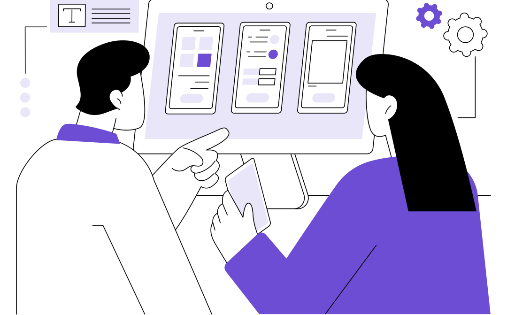
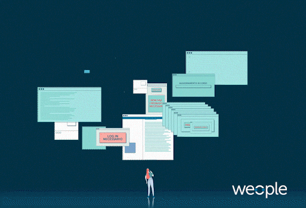
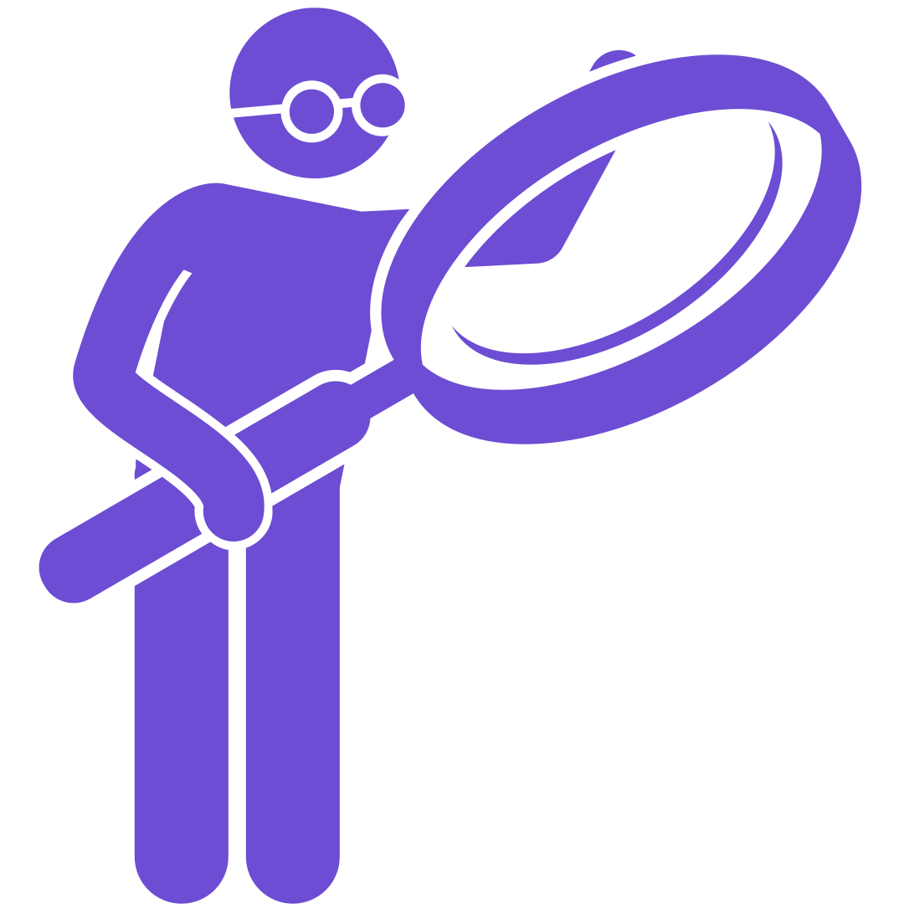
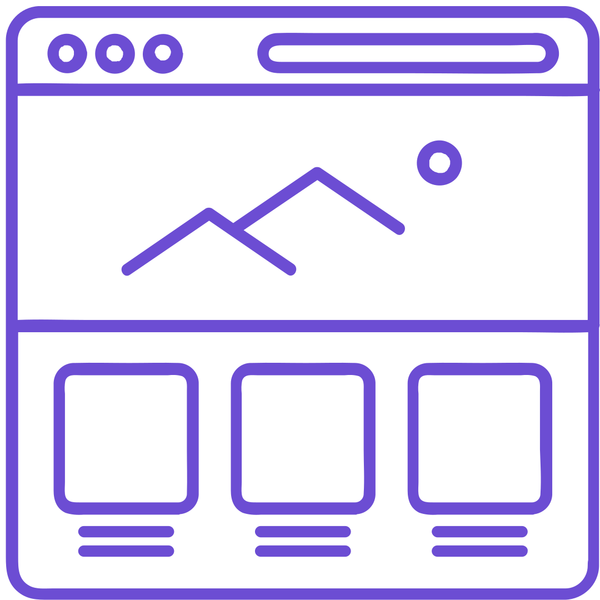

¿Qué es la UX?
Se refiere a la percepción, las emociones, y las respuestas que tiene una persona al interacturar con un producto, sistema o servicio.
Todo sobre diseño en un solo lugar.

La experiencia de usuario no es solo diseño; es la empatía convertida en funcionalidad. A través del UX, diseñamos puentes digitales entre lo que el usuario necesita y lo que la tecnología puede ofrecer, transformando cada clic en una experiencia intuitiva, satisfactoria y memorable.

Se refiere a la percepción, las emociones, y las respuestas que tiene una persona al interacturar con un producto, sistema o servicio.
Proceso de observación, rastreo, análisis y optimización de los comportamientos clave de los usuarios, con el objetivo de mejorar la experiencia genera de las persona al utilizar un producto o servicio.
Es la disciplina y arte encargada del estudio, análisis, organización, disposición y estructuración de la información en espacios de información.

Determina como interactua el usuario con los dispositivos digitales o software..
Cuando una interfaz es confusa o complicada, los usuarios suelen experimentar frustración, cometer errores o abandonar la actividad antes de completarla.
Una mala experiencia de usuario puede generar confusión, frustración y abandono. Por ello el diseño UX busca simplificar la navegación y facilitar cada interacción.
Recurso audiovisual: Coderhouse ¿Qué es Diseño UX? (Diseño de Experiencia de Usuario) | Fundamentos básicos [Video]. YouTube



“El diseño no es solo cómo se ve y cómo se siente. El diseño es cómo funciona.” —Steve Jobs